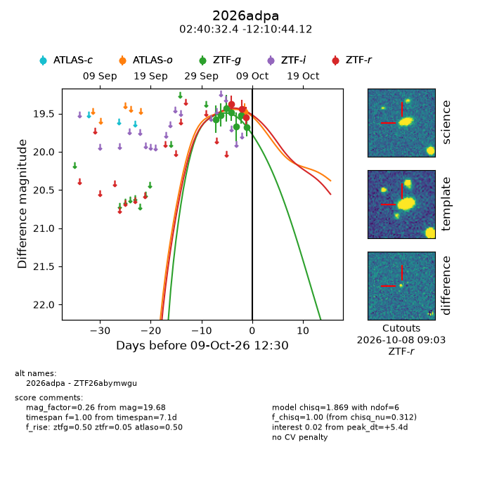
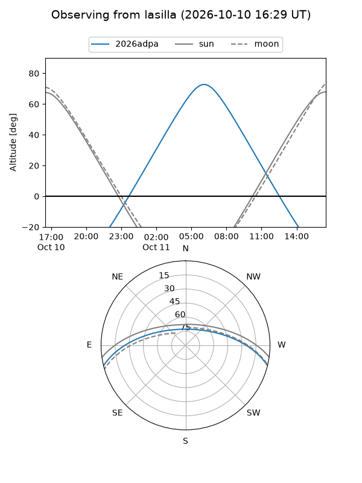
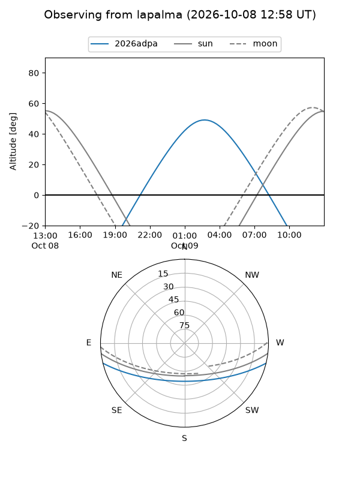
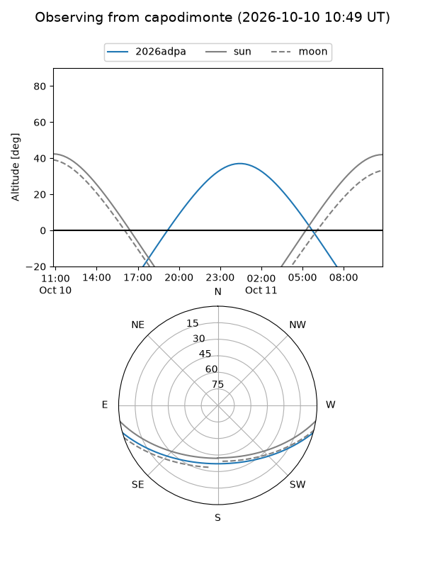
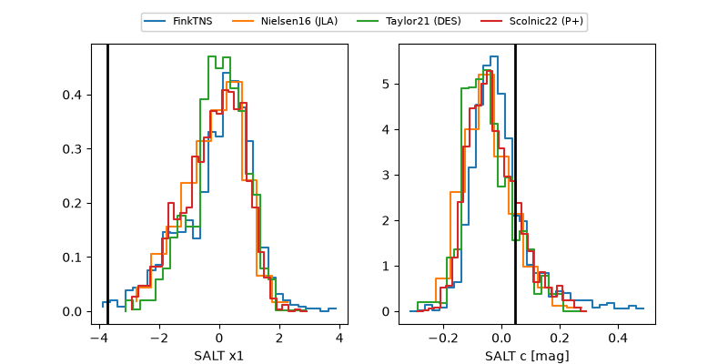

2026adpa
Target 2026adpa at 2026-10-09 12:32
Aliases and brokers:
FINK-ZTF: ztf.fink-portal.org/ZTF26abymwgu
Lasair-ZTF: lasair-ztf.lsst.ac.uk/objects/ZTF26abymwgu
ALeRCE-ZTF: alerce.online/object/ZTF26abymwgu
YSE-PZ: ziggy.ucolick.org/yse/transient_detail/2026adpa
TNS name: wis-tns.org/object/2026adpa
Direct TNS query: direct search
alt names
ZTF26abymwgu (ztf,fink_ztf)
2026adpa (tns,yse)
Coordinates:
equatorial (ra, dec) = 40.1351,-12.17892
equatorial (HMS+DMS) = 02:40:32.43,-12:10:44.12
galactic (l, b) = (187.9824,-60.39194)
Flags:
peak dt: +5.4
Photometry:
last atlaso=19.47, ztfg=19.68, ztfr=19.55
1 atlaso, 7 ztfg, 3 ztfr detections
Lightcurve

Visibility



Additional plots
